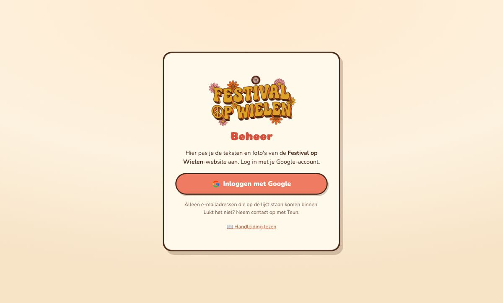
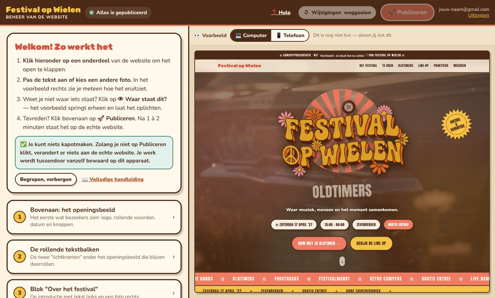
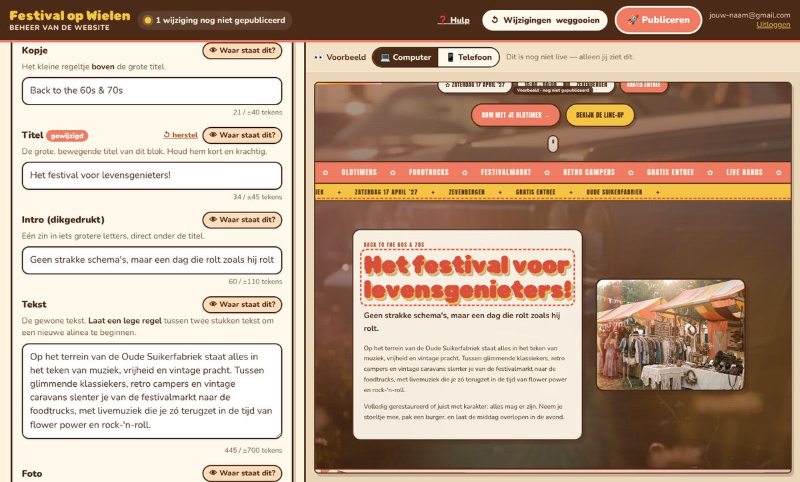
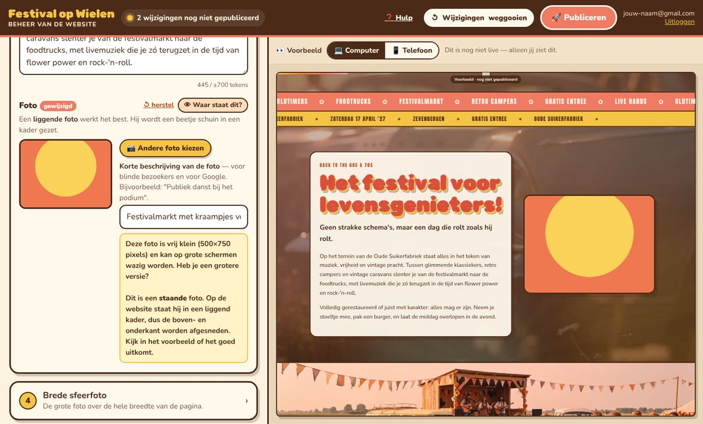
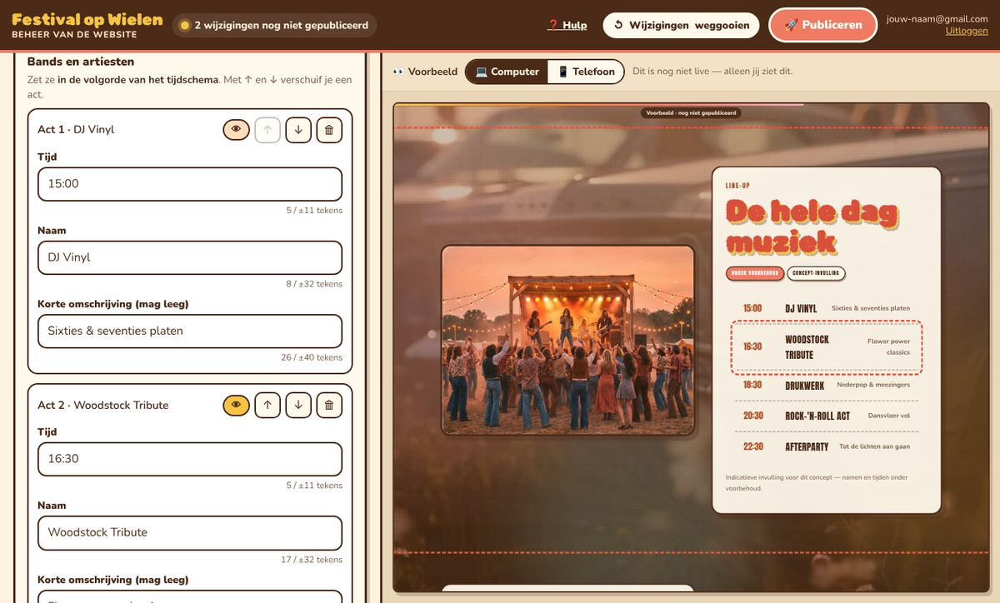
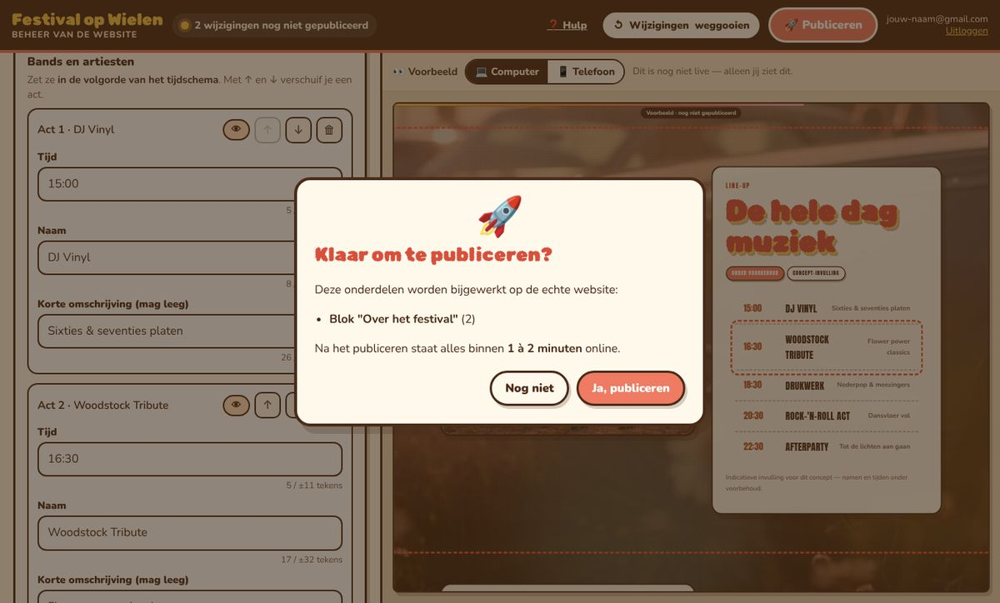
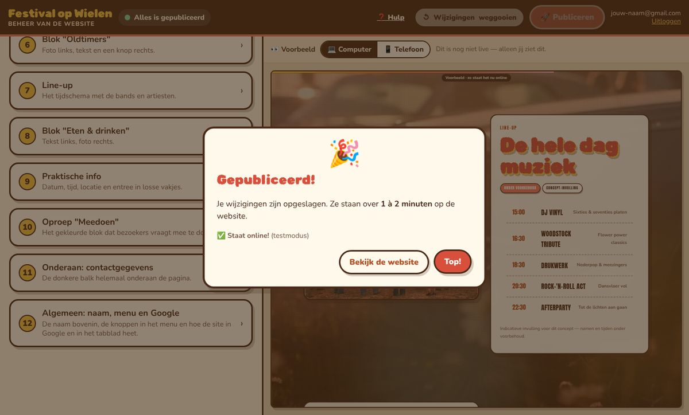
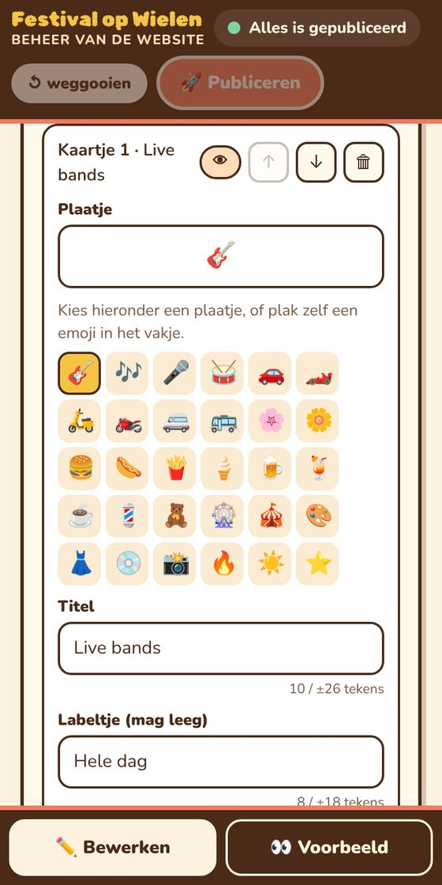
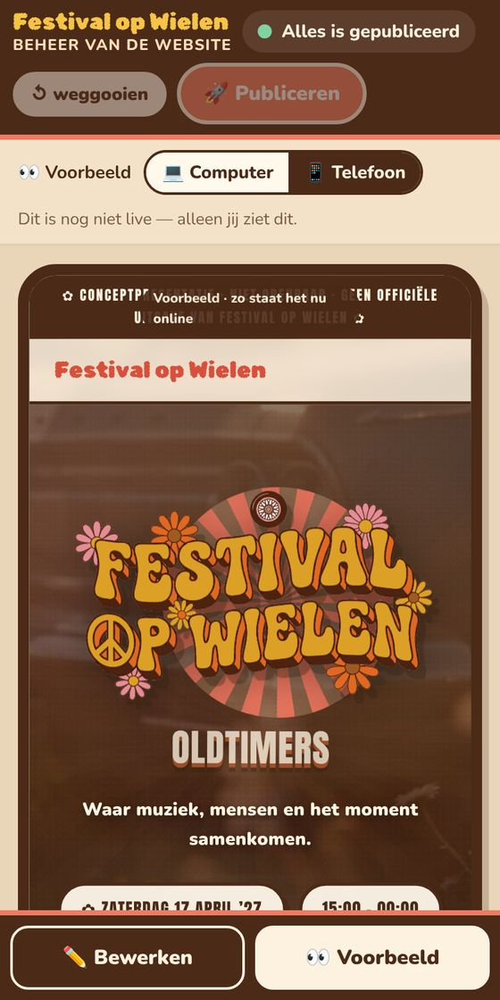

Met het beheer pas je zelf de teksten en foto's van de website aan, zonder dat je iets van websites hoeft te weten. Deze handleiding legt alles stap voor stap uit.
Ga naar het beheer. Bewaar dit adres als bladwijzer:
https://explosionrockets.com/concept/fow/beheer/
Klik op Inloggen met Google en kies je Google-account (je Gmail). Daarna kom je vanzelf terug in het beheer.

Lukt het niet? Alleen e-mailadressen die op de lijst staan komen binnen. Zie je de melding "Dit Google-account heeft (nog) geen toegang", log dan in met het e-mailadres dat je aan Teun hebt doorgegeven, of vraag hem je toe te voegen.
Je blijft 30 dagen ingelogd op hetzelfde apparaat. Uitloggen doe je rechtsboven met Uitloggen.

| Waar | Wat het is |
|---|---|
| Links | Alle onderdelen van de website, van boven naar beneden genummerd. Klik op een onderdeel om het open te klappen. |
| Rechts | Het voorbeeld: zo komt de website eruit te zien. Alleen jij ziet dit; het is nog niet live. Met 💻 Computer en 📱 Telefoon kies je hoe groot het scherm is. |
| Bovenaan | Het bolletje laat zien of er wijzigingen nog niet gepubliceerd zijn (geel) of dat alles gepubliceerd is (groen). Daarnaast de knoppen ↺ Wijzigingen weggooien en 🚀 Publiceren. |
Klap een onderdeel open en klik in een vakje. Typ je nieuwe tekst. In het voorbeeld zie je het meteen veranderen.

Weet je niet waar een tekst op de website staat? Klik op 👁 Waar staat dit?. Het voorbeeld springt erheen en dat stukje knippert even met een gestreepte rand.
Als je in een vakje klikt, springt het voorbeeld er ook vanzelf naartoe.
Let op: de twee draaiende stickers zie je alleen op een groter scherm. Kies dan 💻 Computer in het voorbeeld.
Klik bij een foto op 📷 Andere foto kiezen en kies een foto van je computer of telefoon.

Sommige onderdelen zijn lijstjes: de bands in de line-up, de kaartjes bij "Te doen", de info-vakjes, de woorden bovenaan en de links onderaan.

| Knop | Wat hij doet |
|---|---|
| ＋ Nog een … toevoegen | Voegt er onderaan eentje bij. Vul daarna de vakjes in. |
| ↑ ↓ | Schuift iets omhoog of omlaag, bijvoorbeeld om de line-up op tijd te zetten. |
| 🗑 | Haalt iets weg (je krijgt eerst de vraag of je het zeker weet). Per ongeluk? Klik direct op Ongedaan maken in de melding onderin. |
| 👁 | Laat zien waar dit ene item op de pagina staat. |
Bij de kaartjes kies je ook een plaatje (emoji) en de kleur van het labeltje (geel, koraal, groen of crème). Op de computer staan de kaartjes met 3 naast elkaar, dus 3, 6 of 9 kaartjes ziet er het netst uit.
Bij een knop vul je twee dingen in: de tekst op de knop en waar de knop naartoe gaat. Kies in het lijstje een blok op de pagina (bijvoorbeeld "Naar de line-up") of kies "Naar een andere website of e-mailadres…".
Tevreden? Klik bovenaan op 🚀 Publiceren. Je krijgt eerst een overzicht van wat er verandert.


| Wat wil je? | Zo doe je dat |
|---|---|
| Eén vakje terugzetten naar wat online staat | Klik bij dat vakje op ↺ herstel. |
| Alles terugzetten naar wat online staat | Klik bovenaan op ↺ Wijzigingen weggooien. |
| Iets per ongeluk verwijderd | Klik meteen op Ongedaan maken in de melding onderin. |
| Iets verkeerds gepubliceerd | Geen paniek: pas het aan en publiceer opnieuw. |
Je werk wordt tussendoor automatisch bewaard, op dit apparaat. Sluit je per ongeluk het venster, dan vraagt het beheer de volgende keer of je verder wilt werken. Maar: begin je op je laptop, dan zie je die wijzigingen niet op je telefoon. Publiceer dus op het apparaat waar je bent begonnen.
Het beheer werkt ook op een telefoon. Onderin wissel je tussen ✏️ Bewerken en 👀 Voorbeeld. Een klik op 👁 brengt je direct naar het voorbeeld.


Foto's kiezen gaat op de telefoon vaak zelfs makkelijker: je kiest ze zo uit je fotorol.
| # | Onderdeel | Wat staat erin |
|---|---|---|
| 1 | Bovenaan: het openingsbeeld | Logo, de rollende woorden, ondertitel, info-bolletjes (datum, tijd…), twee knoppen en de gele sticker. |
| 2 | De rollende tekstbalken | De woorden in de twee lichtkranten. |
| 3 | Blok "Over het festival" | Introductietekst en een foto. |
| 4 | Brede sfeerfoto | De foto over de hele breedte. |
| 5 | Te doen | De kaartjes met wat er te beleven is. |
| 6 | Blok "Oldtimers" | Tekst, knop en foto. |
| 7 | Line-up | Labeltjes, het tijdschema met de acts, kleine tekst en foto. |
| 8 | Blok "Eten & drinken" | Tekst en foto. |
| 9 | Praktische info | De vakjes met datum, tijd, locatie en entree, plus de ronde sticker. |
| 10 | Oproep "Meedoen" | Titel, tekst en twee knoppen. |
| 11 | Onderaan: contactgegevens | Omschrijving, adres, organisatie, e-mail, telefoon en links (Facebook enz.). |
| 12 | Algemeen | De naam van het festival, de tekst van de menuknoppen, en de titel en beschrijving voor Google. |
Wat je niet zelf aanpast: de vormgeving (kleuren, lettertypes, animaties), de achtergrondvideo, en zolang dit een conceptpagina is ook de toegangscode, de balk "Conceptpresentatie" en de kleine lettertjes onderaan. Wil je daar iets aan veranderen? Vraag het Teun.
Wacht 1 à 2 minuten en ververs de pagina. Op een telefoon helpt het soms om het tabblad te sluiten en de website opnieuw te openen.
Foto's van een iPhone (HEIC) lukken soms niet op een computer. Kies dan de foto vanaf je telefoon zelf, of sla hem eerst op als JPG.
Liever niet. Wie het laatst publiceert, "wint": die versie komt online. Spreek dus af wie wanneer aanpassingen doet. Heeft iemand anders tussendoor gepubliceerd, dan waarschuwt het beheer je.
Nee, dat staat vast, zodat het er altijd goed uitziet. Je kunt wel onderdelen langer of korter maken en items toevoegen of weghalen. Voor andere wensen: vraag het Teun.
Dat kan niet. Zolang je niet publiceert, ziet niemand je wijzigingen. En ook na het publiceren kun je alles weer terugzetten en opnieuw publiceren.